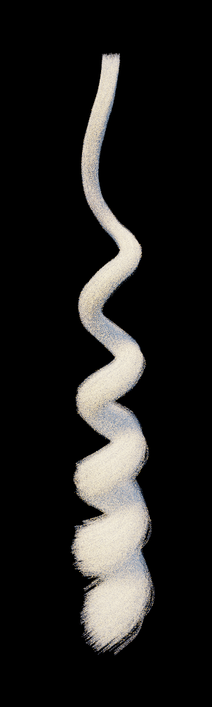
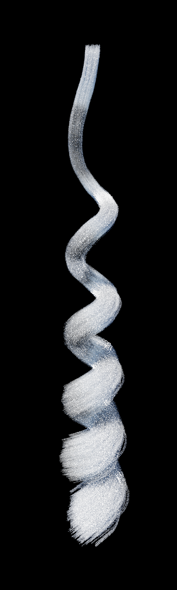
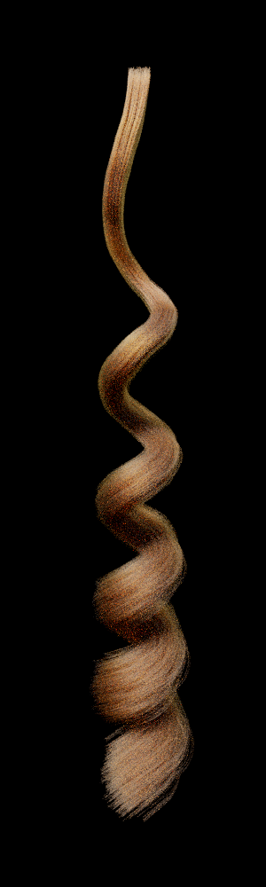

Hair Simulator - CS184
So far we’ve accomplished our first minor goal of finding a good renderer and collecting assets, and we are currently making good progress towards understanding how to render realistic hair. We’re a bit behind schedule, but we’ve resolved a lot of our confusions and we have a good trajectory to finish our modified goals.
We initially downloaded the Mitsuba renderer and played around with that for a while. It rendered hair okay but it wasn’t documented very much, and we spent too much time trying to figure out how to add our own code to render hair with the Kajiya-Kay model. We decided that we should look at other renderers that might be easier to work with We discovered the Tungsten renderer which was slightly more documented by the author and had a really nice existing code for hair intersection that would could build our implementation off of. We had a lot of trouble trying to figure out the correlation with what we were reading in the papers on hair rendering and the implementation of the concepts in the context of a path tracer. A lot of the equations we were reading didn’t make sense with the code we were working with in the Tungsten renderer. The tungsten renderer bases their code around the Marschner model for hair rendering, so it would take a lot of work to try and redo things to work with the Kajiya Kay model of rendering. With this in mind, we decided to move towards working with the Marschner model instead. We’re currently in a research/experimentation phase with the Tungsten renderer. There’s a lot of code to parse with very little documentation, but we’re confident that we are close to understanding how it all fits together and how we can implement hair rendering.
We tried implementing the Kajiya Kay model with the tungsten renderer and ended up with some results that we weren’t very satisfied with.
|

|

|

|
We decided to move away from the Kajiya Kay model and try to render based on the Marschner model. The Tungsten renderer uses a much more optimized and complicated version of the marschner model, so it would be easier for us integrate our own hair rendering BCSDF with the existing code. After implementing this, we have a few other options for next goals:
We are confident that we can figure out the Marschner model for hair rendering and we will evaluate our other goals and pursue them depending on their difficulty and the remaining time we have left.